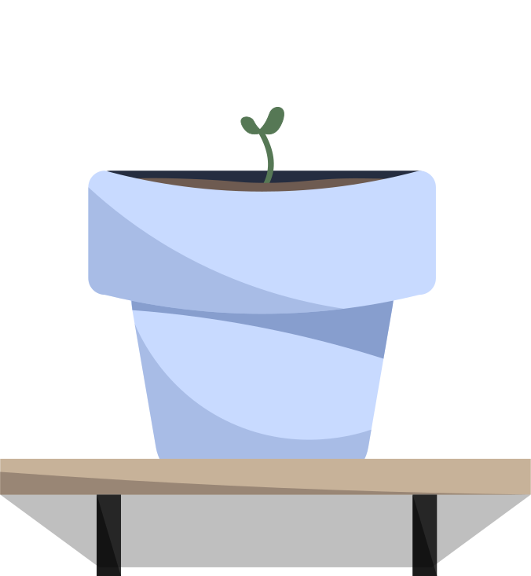

Grundlæggende Web
Hvad jeg har lært under temaet
I Tema 02, grundlæggende Web, har jeg lært de basale ting indenfor web-desgin og -udvikling. Jeg har arbejdet med HTML og CSS, og her lært hvordan man opbygger et website med god struktur.
Jeg har også fået en forståelse for responsivt design. Temaet har givet mig et godt grundlag for at arbejde videre med web og digitale løsninger. Derudover er jeg blevet introduceret for forskellige filformater til web, herunder PNG, JPG, SVG og WebP.
Min arbejdsproces
Opgaverne i dette tema er udarbejdet med udgangspunkt i det materiale, der er blevet udleveret i undervisningen. Herunder både billeder og tekstindhold. Med det jeg har lært i temaet, har jeg arbejdet med opbygning af siden og placering af indholdet.


Det endelige resultat
I min løsning har jeg fokuseret på den basale styling, samt placering af de udleverede billeder, da der ikke var specifikke krav til brugen af dem.
Find min løsning her: Om Computere
Det endelige resultat viser mit niveau på tidspunktet og hvordan de basale principper fra temaet er blevet brugt i et færdigt website. Når jeg ser tilbage på temaet, kan jeg se hvor vigtigt de små øvelser omkring grid og styling har været, for at ende med denne løsning.